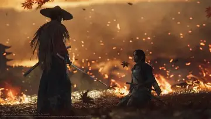

The game Ghost of Tsushima has an expansive and enjoyable storyline
Heres an overveiw
In Ghost of Tsushima, the storyline follows Jin Sakai, a samurai tasked with retaking his home island of Tsushima from the Mongol Empire. The game is divided into three acts, each containing individual tales that contribute to Jin's journey. Key themes include the samurai code, the conflict between tradition and modernity, and the struggle against oppression. The narrative is set in 1274, during a time of turmoil in Japan, and explores Jin's relationships with allies and adversaries, including Khotun Khan, the Mongol leader. The game combines action, strategy, and exploration, offering a rich and immersive experience.
